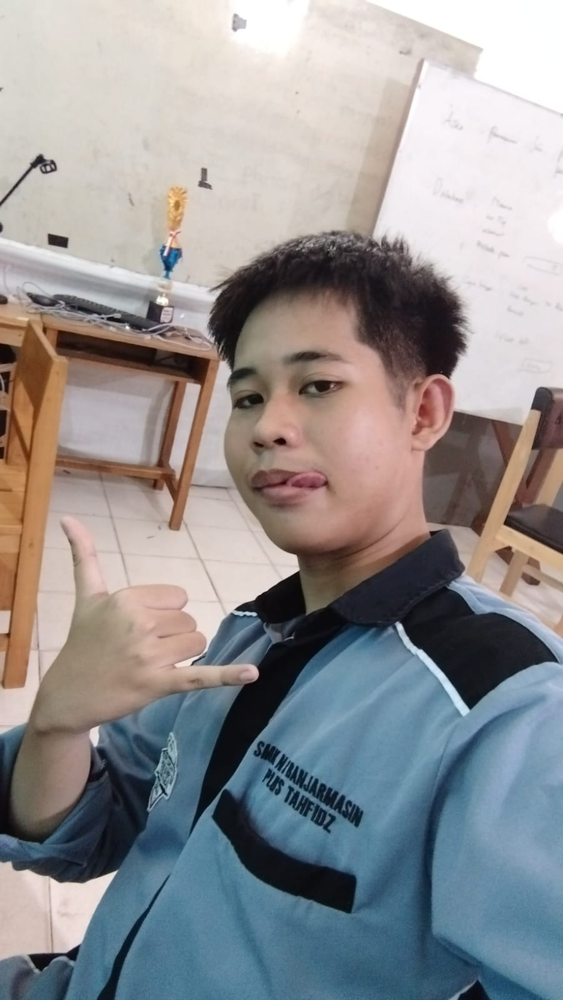

Tentang Penulis

Alter adalah penulis independen yang berfokus pada genre psikologi, ia suka mengeksplorasi tema identitas, emosi manusia, dan konflik batin. Ia adalah alter ego dari seorang manusia bernama Taufik. Saat tidak menulis, ia menghabiskan waktu dengan membaca, coding, bermain game, dan mendengarkan musik.
"I was not always a monster, once I was somebody's hope."